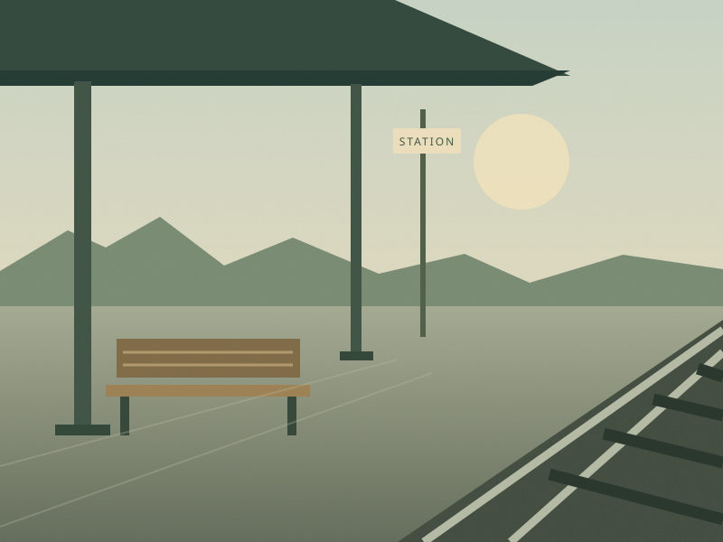
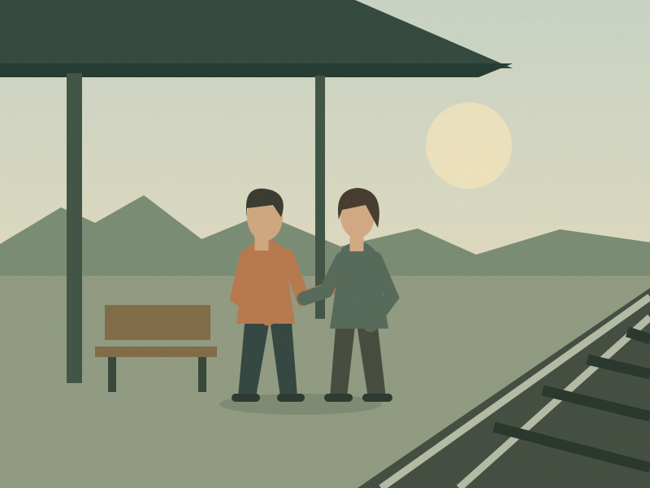

01SAME FRAMES / DIFFERENT MEANING
Some words bring us back.
An invitation turns distance into a new beginning.
BEGINNING
The waiting
An empty platform. Someone is missing.
02
MIDDLE
The invitation
A letter arrives: “Meet me where we began.”

03FRAME 01 OF 03 — BEGINNING
THE READING
The empty platform establishes an absence. The letter offers a way back. The final meeting turns the sequence into a reunion.